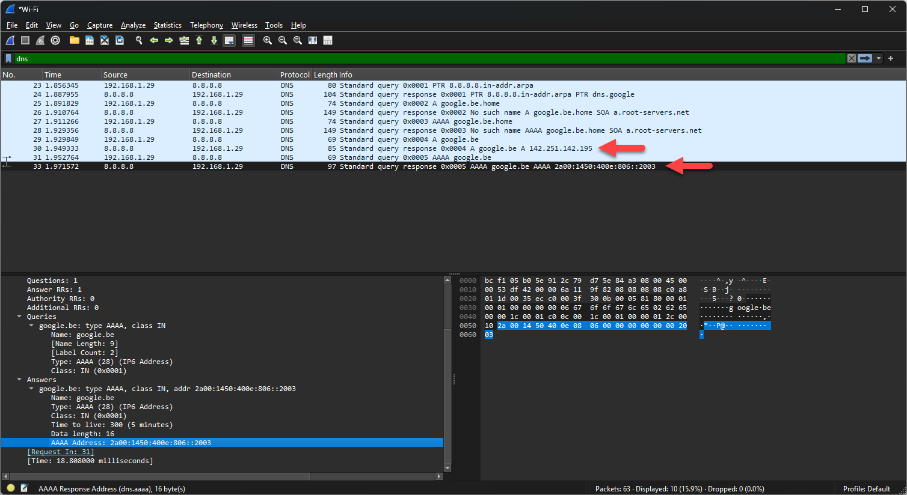

Netwerkverkeer gaat naar een IP-adres, maar jij typt een naam zoals google.be in je browser.
Het Domain Name System vertaalt die naam naar het adres. Het is het telefoonboek van het
internet: je zoekt een naam op en je krijgt het nummer waarmee je die kan bereiken.
Voor je computer een website kan opvragen, stuurt hij eerst een query naar een DNS-server met de vraag welk adres bij de naam hoort. De server antwoordt met een response, en pas daarna begint het verkeer naar dat adres.
Zo'n vraag stel je ook zelf, met het commando nslookup:
nslookup google.be 8.8.8.8
Het eerste deel is de naam die je wil opzoeken, het tweede het adres van de DNS-server die je het vraagt.
8.8.8.8 is een publieke DNS-server van Google. Er zijn er meer, zoals 1.1.1.1
van Cloudflare en 9.9.9.9 van Quad9. Laat je het tweede deel weg, dan gebruikt je computer de
server die hij van het netwerk gekregen heeft.
Op een naam als google.be komen twee antwoorden terug, want die server is bereikbaar via
IPv4 en via IPv6:
142.251.142.1952a00:1450:400e:806::2003Die adressen verschillen van plaats tot plaats en van moment tot moment, want een grote dienst draait op veel servers tegelijk en de DNS-server geeft je er een in de buurt. De adressen die jij te zien krijgt zijn dus zelden dezelfde als die hierboven.

Programma's die op de achtergrond draaien, zoals Windows Update en je antivirus, stellen zelf ook DNS-vragen. Je opname bevat dus meer dan wat jij zelf hebt gevraagd. Sluit zoveel mogelijk programma's af en start je opname vlak voor je het commando geeft, dan blijft het overzichtelijk.